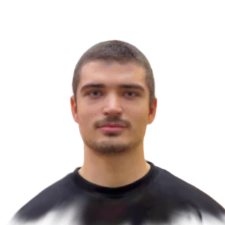

Ilja Safronovs
R&D engineer, 3D reconstruction. Giraffe360, Riga, Latvia, since July 2025. Bachelor’s student at Riga Technical University until 2028.
ilya.safronos@gmail.com github.com/ilyaeis linkedin.com/in/iļja-safronovs-eis ilyaeis.github.io
I work on 3D Gaussian splatting at Giraffe360: a pipeline that turns sparse 360° panoramas and LiDAR scans into splats, in PyTorch and CUDA. Most of my work starts with a reconstruction that looks wrong. I find the cause and fix it in our training code. I led three engineers on a new 3D reconstruction feature (Oct 2026).
Experience
Giraffe360, R&D engineer Riga, to present
Giraffe360 makes cameras and software for real-estate virtual tours. I am in the R&D team, on the 3D reconstruction pipeline: camera poses from structure from motion and bundle adjustment (COLMAP), Gaussian splat training with gsplat, and the camera paths of the videos.
- Blurry windows, outdoor views and mirrors in our 3D videos. I found the cause and changed our training code until the haze and floaters were gone. Builds on the team's earlier window masks. Default in all Giraffe360 Gaussian splat videos since June 2026. Before and after: instagram.com/p/DZsNRB8o772
- Our training defaults use my Gaussian pruning and relocation rules (Jan to Jul 2026), inside an MCMC training strategy. They build on Taming 3DGS (Mallick et al., 2024), which I had implemented from the paper, and on the team's influence tracking: a Gaussian that adds little to the renders gets pruned or relocated. Together, the Jul 2026 default set, which includes my relocation rule, trains 13 to 16 % fewer Gaussians at equal or better quality. I also made training 8.6 % faster on an RTX 3090 at the same quality, by dropping a per-step opacity cull.
- Implemented Analytic-Splatting (Liang et al., 2024) in our gsplat fork: CUDA forward and backward kernels, written from the paper. We use it for downsampling.
- Led three engineers on a new 3D reconstruction feature (Oct 2026). Most of the code is mine, from the camera poses (SfM and bundle adjustment) to the training recipe; I reviewed and merged theirs and cut the release. In production. Before that, I mentored a junior engineer on his new depth method (denser LiDAR depth); since October 2026 our splat training uses it as its depth prior. I have cut the releases of our 3D pipeline since September 2026. Next, I want to grow into leading a team.
- Looped drone video, one flight per room. My idea from the Feb 2026 hackathon. I wrote the camera path and reworked the video pipeline. The look was worked out with the designers. It is a product now: instagram.com/giraffe360/reel/Dd9ODBVIHhE
- A Rust/wgpu splat viewer that other apps can embed and control (May 2026). It swaps and combines PLY scenes live. Team tools: an experiment runner where an AI agent starts and tracks trainings on a local GPU, and an MCP server (Node.js) for our task board.
Education
Riga Technical University, Professional Bachelor, Financial Engineering to (expected)
Probability, statistics, stochastic analysis, Monte Carlo methods, algorithms, databases.
AI Talent Program (Ponder) to
C++, Python, maths and AI, with mentors from industry. That is how I got the Giraffe360 job.
Riga State Classical Gymnasium, programming and mathematics track
State mathematics olympiads. Small Mathematics University (University of Latvia).
Projects
- Room splats from few photos (2026): ilyaeis.github.io/few-photo. Splats of public Zip-NeRF rooms from 6 to 12 photos: six pose models compared under one gsplat recipe; generated views from Stable Virtual Camera add 1.3 to 1.7 dB at 6 photos.
- Portfolio site (2026): ilyaeis.github.io. A live Gaussian splat of a flat that I trained with gsplat on public Zip-NeRF photos, 18 minutes on one RTX 3090.
- sort_visualization (2022, C++/SFML): 16 sorting algorithms animated as columns, points, circles, spirals and pyramids. The same C++ runs in the browser, compiled to WebAssembly.
- Coding-agent harness (own time): one master session plans and checks the work; workers run in their own git worktrees.
- monte-carlo-finance (2026, Python): option pricing with variance reduction, GARCH volatility, VaR backtests with the Kupiec test, efficient frontier, CAPM. From RTU coursework.
- projects_with_NEAT (2025, Python): NEAT agents that learn Flappy Bird and Pong.
- Also: load-balancing-experiments (2026, Python, RTU networks course: DNS, queueing, consistent hashing), crypto-quant-lab (2026, Python, trading-rule backtests), flow (2026, Dart/Flutter, private: offline workout tracker with golden-image tests in CI), RTU_program_parser (2025, Python, with Aleksejs Peņkovs: finds extra RTU lectures that fit your schedule).
- Older: Snake with a maze generator (Pygame, 2024), bezier-curve-js (2023).
Skills
3D: Gaussian splatting with gsplat (MCMC, pruning and relocation, custom CUDA kernels), SfM and bundle adjustment with COLMAP, equirectangular and fisheye camera models, LiDAR depth priors.
Python, C++, CUDA, PyTorch, gsplat, Rust/wgpu, Dart/Flutter, JavaScript/three.js, Java, SQL.
Linux, Docker, Git and GitLab CI, AWS S3, Node.js (MCP servers), OpenAI API.
Latvian, English, Russian.
With the R&D team at Giraffe360. Methods build on Taming 3DGS (Mallick et al., 2024) and Analytic-Splatting (Liang et al., 2024).